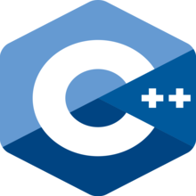
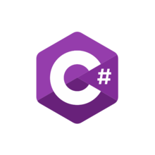

ExpressEdu
Προγραμματισμός

Python
Δυσκολία = Εύκολη | Κόστος = 150$
Η Python είναι διερμηνευόμενη (interpreted), γενικού σκοπού (general-purpose) και υψηλού επιπέδου, γλώσσα προγραμματισμού.[1][2][3]
Ανήκει στις γλώσσες προστακτικού προγραμματισμού (Imperative programming) και υποστηρίζει τόσο το διαδικαστικό (procedural programming)
όσο και το αντικειμενοστραφές (object-oriented programming) προγραμματιστικό υπόδειγμα (programming paradigm). Είναι δυναμική γλώσσα προγραμματισμού
(dynamically typed) και υποστηρίζει συλλογή απορριμμάτων (garbage collection ή GC).
Χρήσιμοι συνδέσμοι!

Java
Δυσκολία = Μέτρια | Κόστος = 250$
Η Java είναι μια αντικειμενοστρεφής γλώσσα προγραμματισμού που σχεδιάστηκε από την εταιρεία πληροφορικής Sun Microsystems.Στις αρχές του 1991, η Sun αναζητούσε το
κατάλληλο εργαλείο για να αποτελέσει την πλατφόρμα ανάπτυξης λογισμικού σε μικρο-συσκευές (έξυπνες οικιακές συσκευές έως πολύπλοκα συστήματα παραγωγής γραφικών).
Τα εργαλεία της εποχής ήταν γλώσσες όπως η C++ και η C. Μετά από διάφορους πειραματισμούς προέκυψε το συμπέρασμα ότι οι υπάρχουσες γλώσσες δεν μπορούσαν να καλύψουν
τις ανάγκες τους. Ο "πατέρας" της Java, James Gosling, που εργαζόταν εκείνη την εποχή για την Sun, έκανε ήδη πειραματισμούς πάνω στη C++ και είχε παρουσιάσει κατά καιρούς
κάποιες πειραματικές γλώσσες (C++ ++,που μετέπειτα ονομάστηκε C# ) ως πρότυπα για το νέο εργαλείο που αναζητούσαν στην Sun. Τελικά μετά από λίγο καιρό κατέληξαν με
μια πρόταση για το επιτελείο της εταιρίας, η οποία ήταν η γλώσσα Oak. Το όνομά της το πήρε από το ομώνυμο δένδρο (βελανιδιά) το οποίο ο Gosling είχε έξω από το γραφείο
του και έβλεπε κάθε μέρα.
Χρήσιμοι συνδέσμοι!

C++
Δυσκολία = Υψηλή | Κόστος = 400$
Η C++ (διαβάζεται: σι πλας πλας[1] [siː plʌs plʌs]) είναι μία γενικού σκοπού γλώσσα προγραμματισμού Η/Υ. Θεωρείται μέσου επιπέδου γλώσσα, καθώς περιλαμβάνει έναν συνδυασμό
χαρακτηριστικών από γλώσσες υψηλού και χαμηλού επιπέδου. Είναι μια μεταγλωττιζόμενη γλώσσα πολλαπλών παραδειγμάτων, με τύπους. Υποστηρίζει δομημένο, αντικειμενοστραφή και
γενικό προγραμματισμό.Η γλώσσα αναπτύχθηκε από τον Μπιάρνε Στρούστρουπ το 1979 στα εργαστήρια Bell της AT&T, ως βελτίωση της ήδη υπάρχουσας γλώσσας προγραμματισμού C.
Ουσιαστικά ήταν η γλώσσα C εφοδιασμένη με κλάσεις όπως αυτές της Simula και γι' αυτό αρχικά ονομάστηκε "C with Classes".[1] Ο Rick Mascitti πρότεινε το όνομα «C++» στα
μέσα του 1983 και έκτοτε επικράτησε.[1] Οι βελτιώσεις ξεκίνησαν με την προσθήκη κλάσεων, και ακολούθησαν, μεταξύ άλλων, εικονικές συναρτήσεις, υπερφόρτωση τελεστών,
πολλαπλή κληρονομικότητα, πρότυπα κ.α. Η γλώσσα ορίστηκε παγκοσμίως, το 1998, με το πρότυπο ISO/IEC 14882:1998. Η τρέχουσα έκδοση αυτού του προτύπου είναι αυτή του 2003,
η ISO/IEC 14882:2003. Μια καινούρια έκδοση είναι υπό ανάπτυξη, γνωστή ανεπίσημα με την ονομασία C++0x.
Χρήσιμοι συνδέσμοι! (H C++ ΔΕΝ χρειάζεται εγκατάσταση)

C#
Δυσκολία = Υψηλή | Κόστος = 450$
(ΝΑ ΜΕΤΦΡΑΣΤΕΙ)
C# (/si ʃɑːrp/ see sharp)[b] is a general-purpose, multi-paradigm programming language. C# encompasses static typing, strong typing, lexically scoped, imperative,
declarative, functional, generic, object-oriented (class-based), and component-oriented programming disciplines. C# was designed by Anders Hejlsberg from Microsoft in
2000 and was later approved as an international standard by Ecma (ECMA-334) in 2002 and ISO (ISO/IEC 23270) in 2003. Microsoft introduced C# along with .NET Framework
and Visual Studio, both of which were closed-source. At the time, Microsoft had no open-source products. Four years later, in 2004, a free and open-source project called
Mono began, providing a cross-platform compiler and runtime environment for the C# programming language. A decade later, Microsoft released Visual Studio Code
(code editor), Roslyn (compiler), and the unified .NET platform (software framework), all of which support C# and are free, open-source, and cross-platform.
Mono also joined Microsoft but was not merged into .NET. As of 2021, the most recent version of the language is C# 9.0, which was released in 2020 in .NET 5.0.
Χρήσιμοι συνδέσμοι! (H C# ΔΕΝ χρειάζεται εγκατάσταση)

HTML5
Δυσκολία = Υψηλή | Κόστος = 500$
Η HTML (αρχικοποίηση του αγγλικού HyperText Markup Language, ελλ. Γλώσσα Σήμανσης Υπερκειμένου) είναι η κύρια γλώσσα σήμανσης για τις ιστοσελίδες,
και τα στοιχεία της είναι τα βασικά δομικά στοιχεία των ιστοσελίδων.Η HTML γράφεται υπό μορφή στοιχείων HTML τα οποία αποτελούνται από ετικέτες (tags),
οι οποίες περικλείονται μέσα σε σύμβολα «μεγαλύτερο από» και «μικρότερο από» , μέσα στο περιεχόμενο της ιστοσελίδας. Οι ετικέτες HTML συνήθως
λειτουργούν ανά ζεύγη, με την πρώτη να ονομάζεται ετικέτα έναρξης και τη δεύτερη ετικέτα λήξης (ή σε άλλες περιπτώσεις ετικέτα
ανοίγματος και ετικέτα κλεισίματος αντίστοιχα). Ανάμεσα στις ετικέτες, οι σχεδιαστές ιστοσελίδων μπορούν να τοποθετήσουν κείμενο, πίνακες, εικόνες κλπ. Ο σκοπός ενός
web browser είναι να διαβάζει τα έγγραφα HTML και να τα συνθέσει σε σελίδες που μπορεί κανείς να διαβάσει ή να ακούσει. Ο browser δεν εμφανίζει τις ετικέτες HTML,
αλλά τις χρησιμοποιεί για να παρουσιάσει το περιεχόμενο της σελίδας. Τα στοιχεία της HTML χρησιμοποιούνται για να κτίσουν όλους του ιστότοπους. Η HTML επιτρέπει
την ενσωμάτωση εικόνων και άλλων αντικειμένων μέσα στη σελίδα, και μπορεί να χρησιμοποιηθεί για να εμφανίσει διαδραστικές φόρμες. Παρέχει τις μεθόδους δημιουργίας
δομημένων εγγράφων (δηλαδή εγγράφων που αποτελούνται από το περιεχόμενο που μεταφέρουν και από τον κώδικα μορφοποίησης του περιεχομένου) καθορίζοντας δομικά σημαντικά
στοιχεία για το κείμενο, όπως κεφαλίδες, παραγράφους, λίστες, συνδέσμους, παραθέσεις και άλλα. Μπορούν επίσης να ενσωματώνονται σενάρια εντολών σε γλώσσες όπως η
JavaScript, τα οποία επηρεάζουν τη συμπεριφορά των ιστοσελίδων HTML και από στατικές τις κάνουν διαδραστικές.
Χρήσιμοι συνδέσμοι! (H HTML5 ΔΕΝ χρειάζεται εγκατάσταση)